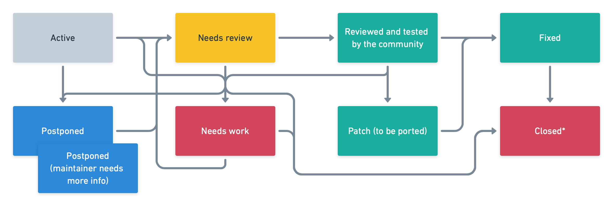

Working in the Drupal
issue queue
 |
Eelke Blok |
| Sr. Drupal developer @ One Shoe | |
| https://oneshoe.com | |
| @eelkeblok | |
| https://drupal.org/u/eelkeblok |
When is an issue critical?
-
Bugs
- Sites can be rendered unusable, without a workaround
- Data loss
- Security vulnerabilities*
-
Tasks
- Severe performance issues
- Significant regressions
- Maintainer can decide an issue should not block a release and downgrade
- Features
- Rarely, at maintainer's discretion
When is an issue major?
-
Bugs
Bugs that have significant repercussions but do not render the whole system unusable (or have a known workaround).- Interfere with normal site visitors' use of the site
- Render one feature unusable with no workaround
- Block contributed projects with no workaround
- Cause user input to be lost, but do not delete or corrupt existing data
-
Tasks
Important API additions, refactors, and other significant changes that are not bugs.- Code refactoring like removing Taxonomy term reference field in favor of Entity reference
- Adding a Drupal Yaml wrapper
- Decoupling Drupal core from a dependency that is no longer supported
- Features
Based on their value to the project overall and/or the scope of work to complete them.- Providing a better UX for creating, editing & managing draft revisions
Issue statuses
https://www.drupal.org/issue-queue/status
Closed
A status with multiple personality disorder
|
|
Use the issue summary template
Problem/Motivation
(Why the issue was filed, steps to reproduce the problem, etc.)
Proposed resolution
(Description of the proposed solution, the rationale behind it,
and workarounds for people who cannot use the patch.)
Remaining tasks
(reviews needed, tests to be written or run, documentation to
be written, etc.)
User interface changes
(New or changed features/functionality in the user interface,
modules added or removed, changes to URL paths, changes to user
interface text.)
API changes
(API changes/additions that would affect module,
install profile, and theme developers, including
examples of before/after code if appropriate.)
Data model changes
(Database or configuration data changes that would make stored
data on an existing site incompatible with the site's updated
codebase, including changes to hook_schema(), configuration
schema or keys, or the expected format of stored data, etc.)
Release notes snippet
(Major and critical issues should have a snippet that can be
pulled into the release notes when a release is created that
includes the fix)
Original report by [username]
(Text of the original report, for legacy issues whose initial
post was not the issue summary. Use rarely.)
[issue-number]-[comment-number].patch
[description]-[issue-number]-[comment-number].patch
[project]-[description]-[issue-number]-[comment-number].patch
[patch-name]--do-not-test.patch
[patch-name]--FAIL.patch
Creating a patch
$ git diff 8.x-1.0 123456/1 > my-patch.patch
Or...
$ git diff 8.x-1.0 123456/1 > my-patch.patch
Interdiff
A way for reviewers to quickly understand the changes you made from one patch to the next.
Rerolling patches
- The base project changed in such a way that the patch no longer applies.
- Otherwise known as a merge conflict.
- Git is excellent at resolving conflicts (really!)
Rerolling patches (2)
Rerolling patches (3)
$ git diff 8.x-1.x 123456/1 > my-patch.patch
Who thinks this is a modern workflow fit for 2020?